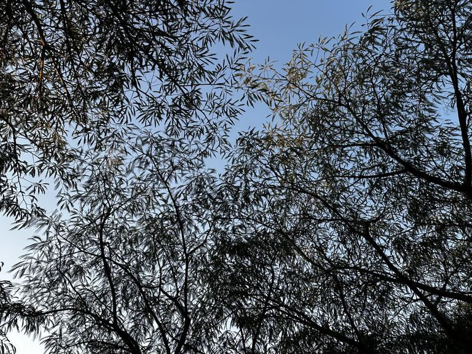
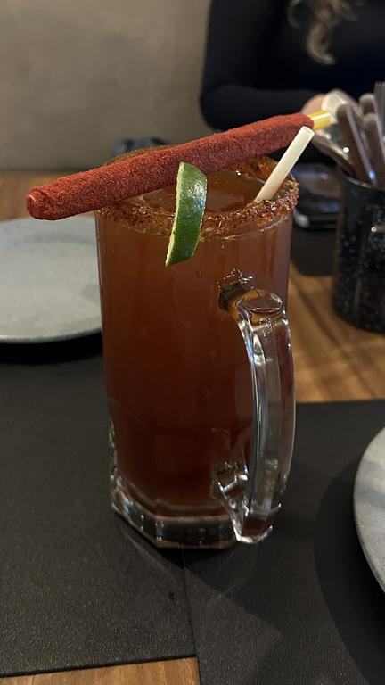

01-06-2026
By Sofia Maldonado

I've begun walking a lot more this month
Hello and welcome to my may 2026 overview! I had an idea to do write-ups at the end of every month of all of the interesting things I did and experienced. This is the first of these, and hopefully the first of many.
The highlight of my month was finishing Meet Me In The Bathroom by Lizzy Goodman. I started the book on the 21st of april but only finished it until may. MMITB is an oral history of the garage rock revival in NYC between the late 90s and 2011. The book contains hundreds of interviews with band members, journalists, managers, record producers, label executives, bloggers, and many others.
I learned about the book last year thanks to a series of videos by MarcButEvil about The Strokes, as he used the video a lot as a source for those videos. The Strokes are the most emblematic (if not the most popular) band that came out of this movement, since they were the ones that started it. But there are also interviews with the Yeah Yeah Yeahs, Jack White of The White Stripes, LCD Soundsystem, Interpol, Kings of Leon, Vampire Weekend, TV on the Radio and so many others. A must read for fans of any of these bands, even if it is difficult at times to follow since there are so many people interviewed, sometimes you don't know why a particular person is relevant to a specific conversation or topic.
This month I also started reading two other books. The first is El Pasado Indigena by Alfredo López Austin and Leonardo López Luján. This is a general history of the indigenous groups that live and have lived in what is now México. But of course, indigenous groups from centuries ago didn't respect the country's current borders so there's also mentions of groups that lived in the modern United States, Guatemala, Honduras, Belize, Honduras, Nicaragua and Costa Rica. It has been a very interesting reading so far, and it contains a lot of very useful maps and timelines to better situate yourself in the context of the book.
The second book I started reading is Gentlemen Prefer Blondes by Anita Loos, a novel about a 1920s NYC flapper girl. This is a comic novel that's 101 years old, which means that I've definitely had one or more references or jokes fly over my head. I am very intrigued by how the book is written, and there's a lot of reading in between the lines necesarry to fully understand what is happening.
This last week I also started reading Magnifica Humanitas, Pope Leo XIV's encyclical about artificial intelligence. I definitely plan on doing a write-up about it when I finish it, it has been very interesting so far.
Some stand-alone articles that I also read this month that interested me include:
- Stop Consuming Art by Halianna H. Leland for The Harvard Crimson.
- AI Is Technology, Not a Product by John Gruber.
- Ted Turner's obituary in The New York Times (gift link). He definitely led an interesting life...
This month I saw five movies: Pulp Fiction, Wake Up Dead Man, Trainspotting, Perfect Days and Marty Supreme.
Pulp Fiction is a very decent movie and I understand why it's considered a cult classic but I didn't quite love it, unlike other Tarantino movies that I think are phenomenal. The funniest scene was when Vincent was prepping himself in the bathroom to not fuck Mia as if it was some herculean task. The male mind is very interesting at times.
Wake Up Dead Man reminded me a lot of The Last Jedi because it is a very interesting story that's very well thought out but it's accompanied by some of the worst dialog and most insufferable acting that I've had the displeasure of seeing, truly a Rian Johnson classic.
Trainspotting is one of the most visually grotesque films I've ever seen. Mark is of course very questionable but I've never rooted so much for a character in a film before.
Perfect Days, on the contrary, was one of the most beautiful films I've ever watched. It made me reflect a lot on my life, my routine and the value of the things I do every day. Something interesting about it is that The Tokyo Toilet featured in the movie is a real project in Tokyo to build more public bathrooms, and this movie was made in part as promotion for that project. Very cool!
Marty Supreme was a movie I had wanted to see for a while. It has great acting but without spoiling anything the ending pmo so much. That's not what a hypercompetitive guy would do!
This month I also saw Chernobyl (2019) by HBO. One of the best thrillers I've seen, in any medium. I didn't know that I was so sensitive to physical horror until I saw this show. Radiation poisoning is horrifying. The entire cast is incredible, mainly Jared Harris and Stellan Skarsgård of course but also Emily Watson, Con O'Neil and a very young Barry Kheogan.
This month I listened to just three new albums: Turn On The Bright Lights by Interpol and Elephant by The White Stripes, of course because of MMITB. TOTBL was decent but not much more, and Elephant has some of the best guitars on any album I've heard, Jack White is a musical genius. The one wish I have with the album is that I would've loved to hear more of Meg White's vocals, she has a beautiful voice.
This month I also listened to 011025 by mexican indie band Zoé. In 2025 they went on tour for the first time in years, with a 6 night stay in Mexico's largest venue as the headlining stint. I actually went to see them in September, and this album is a live recording of their entire concert on October 1st, hence the name. Even if it wasn't the same night, it was the exact same setlist. I absolutely loved the album because it let me re-live one of my favorite nights ever. I recommend listening to both the original recordings of the songs and the live performances, they are an awesome band live.
I generally don't drink much since I am exclusively a social drinker, and I frankly don't go out that much when alcohol is involved. For some reason this month I had an excuse to drink almost every weekend, mainly parties. I feel like I really damaged my liver this month, I don't plan to drink much soon (at least that's what I tell myself).

Imagínate no ser de LATAM y nunca haber tomado una michelada :pensive
This month I finally got around to celebrating my birthday, even though my birthday is in mid-april. I invited all of my closest friends to my house for a party and I had a truly great time. There's few things I love more than inviting people to my home, and having people that wouldn't meet each other otherwise to talk and drink and laugh together is a very precious thing to me. Ignoring one little detail it was a perfect night and I felt very happy :)
Me during my birthday party, image taken by a friend
This month I finished my sixth semester of university, and I am already done with all of the data science classes in my program, which means that I am only missing extra classes and projects and then I am done with schooling. Scary! This also means that I now feel more confident entering the workforce on something related to my degree, which is something I am really looking forward to.
Since we get 3 months of vacation between semesters, and like I said above I don't work yet, I decided to enroll in a class during the summer: Object Oriented Programming. So far I am really enjoying it, even if I think my teacher's teaching style is slightly outdated (which I guess I should expect from a class about Java), but I will have much more to say about that in June.
Very meta! This month I also re-launched this very website, with more robust tooling, and making it much easier to edit and expand. The main addition to this was launching this new blog, which I've really enjoyed writing so far. Please look forward to this website becoming bigger and better during the next couple of months.
My most anticipated tech event for June is of course WWDC 2026, where I hope Apple starts to at least atone for some of Liquid Glass' worst sins. I plan to write something about this during the week.
Two albums that I'm really anticipating for next month are You Seem Pretty SAd for a Girl So in Love by Olivia Rodrigo and Reality Awaits by The Strokes, maybe the latter not so much because the singles have been lame so far but I try not to judge albums by their singles, sometimes they are some of the worst songs.
Something that I'm not really excited for? Living in a city that's hosting the World Cup, especially when they close your public parks because of dumb "renovations" that only destroy cultural spaces and launder public money. And the additional traffic, of course.